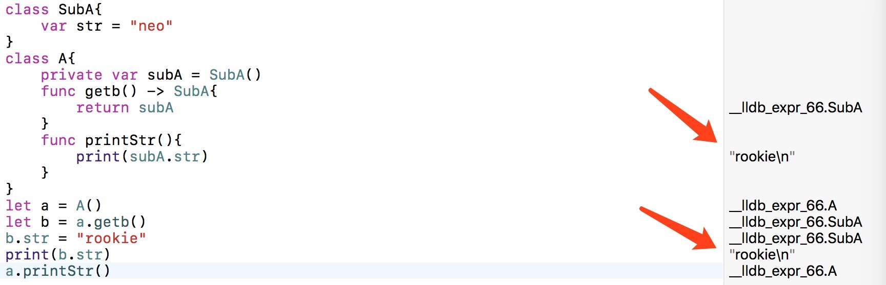
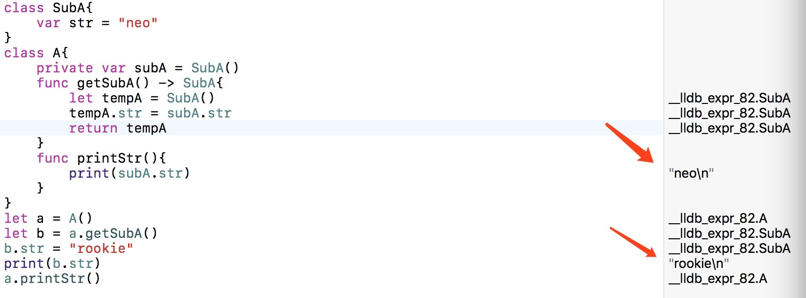
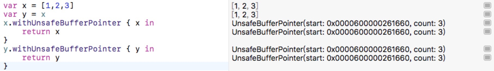
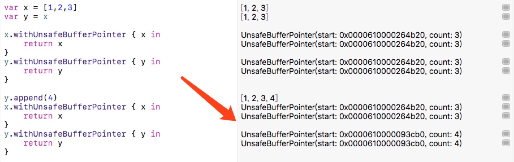
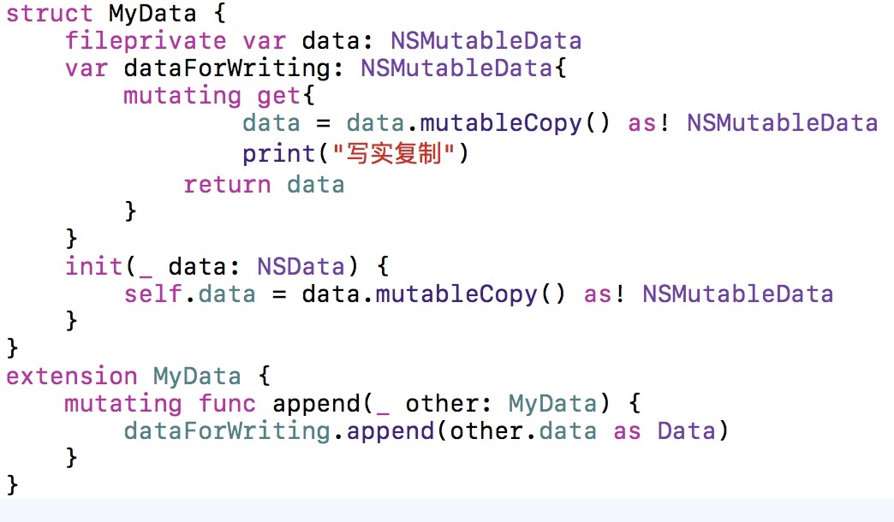
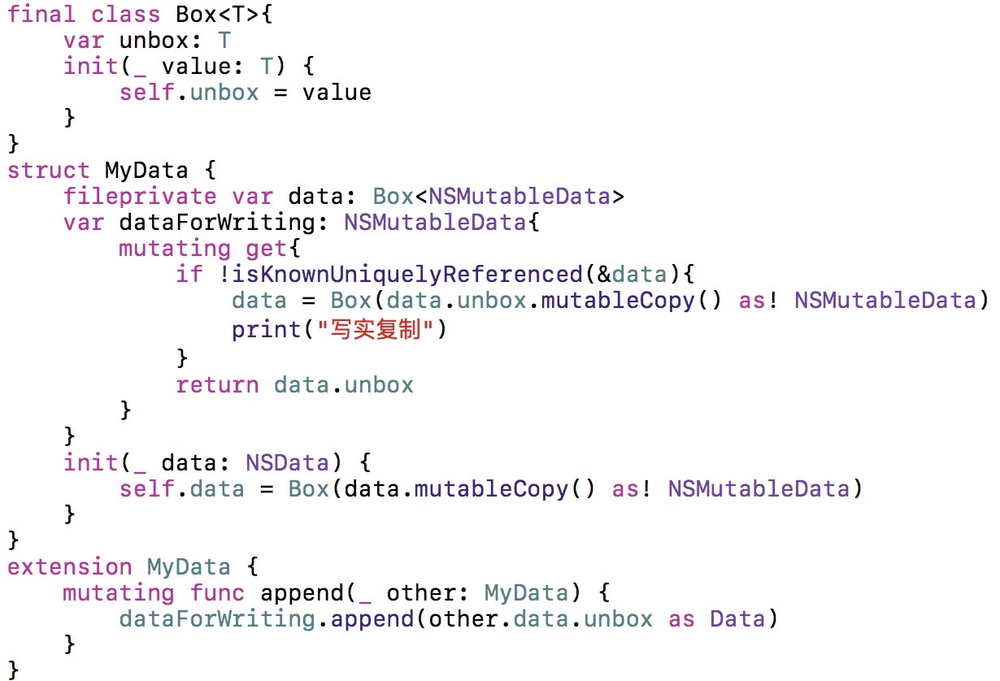

对Swift写时复制技术的理解
最近又重新在研究数据结构(
当然大学时候学的也不咋地😜)打算把一些经典的数据结构用Swift语言重新实现一遍.虽然在实际开发中,很多高级的数据结构,算法都不需要你来写,我相信每一种语言,都有足够多的框架提供近乎完美的API供你日常开发,这会造成一种幻觉,就是你会觉的这些基础的东西不重要,我理不理解它并不会对我有太大影响,我会调用几个API就足矣.但作为一个coder(其实很多行业也是一样),对基础知识理解的深度,在很大程度上决定了在这条路上你的上限在哪里.
背景
其实很早之前我就想仔细的深入的用Swift研究一次数据结构了,但由于一直没有找到好的书籍,这个计划就被挂起了🤕.最近看喵神翻译的新书<<集合类型优化>>出版了传送门,借此机会,正好潜心研究一下.
书中的第一节就提到了写时复制技术,这个词相信使用Swift的开发者都是既熟悉又陌生的.我也听过好多次,在Swift进阶中,我就看到过(写博客的好处之一就是你想把东西讲明白要比你自己看明白深刻好几倍),所以就先研究一下写时复制技术.
值类型和引用类型的区别,什么是值语义
值类型和引用类型的区别这点顺带说一下就行,引用类型的具体表现就是我们最常用的类,通过引用计数来管理,通常我们赋值等操作,只会复制一个指针,指向它所在的内存地址,多一个引用,引用计数就+1,增加了效率,但是不安全(我在Whats new in Swift4这篇博客中的Encoding and decoding中有提到).值类型我们也经常用,Int类型,char,struct都是值类型,将一个值类型变量赋给另一个值类型变量时，将复制包含的值,具有新的内存地址,但这样做是代价是昂贵的(Swift做了优化,后面会解释).
那什么又是值语义,假设这样的场景,你有一个Class,里面所有的属性(也是引用类型的)都是私有的private,你不想让外部直接用,外部如果需要使用,可以调用暴露的get方法,你把私有属性返回给他,但其实这个时候,这个属性已经不在是私有的了,因为引用类型的特点,外部已经拿到了私有属性的指针,可以对他进行任务操作,很不安全.

图中对象b的str改变了,a中的subA对应的属性也跟着改变了.这显然不是你想要效果.需要改造一下,方法也很简单

如果是继承NSObject的类,可以直接用copy来复制.不管怎么说 效果是实现了,它是一个引用类型,但是表现的确实值类型的效果,它就具有了值语义.但很明显这样做的代价是昂贵的,每个get都需要重新创建一个,或复制(深copy)一个,这种消耗是我们不希望存在的.这就需要用到写实复制技术
什么是写时复制
打个比方,你在公司上班,老板说每天给你80块钱,你心里算了算,说行,那一小时就是10块钱,一分钟也就是0.16666667块钱,那老板你每分钟都给我这些钱吧.老板说你小子有病吧,你想累死财务吗(这就是一个无用的消耗)?这钱又飞不了,等你要用的时候(比如你每天下班要吃饭了)我在给你不就完了么,也不耽误你呀.你一想有道理,要不然我还得每天上班带个麻袋装钱,那好吧.这样一种约定就出现了.就是有用的时候在给你,平常只是记录一下
简单来说这就是写实复制技术,只有需要改变得时候,才会对变量进行复制,如果不改变,大家都公用一个内存.在 Swift 标准库中，像是Array，Dictionary和Set这样的集合类型是通过写时复制 (copy-on-write) 的技术实现的(摘录来自: Chris Eidhof. “Swift 进阶”) .所以我们用数组Array举个🌰:

可以看到,尽管数组是值类型,但是在赋值操作之后,内存还是相同的,并没有真正的进行复制.我们改变一下y,在看看:

当y发生改变的时候,y拥有了新的内存地址,它发生了赋值.这就是写时复制技术,昂贵的复制操作只会发生下变量发生改变的时候.这样做后,我们可以保证,我们的数据既是安全的也是高效的.我们需要做什么
当你的结构体内部都是值类型的时候,写时复制是免费的,但是大部分情况,你的结构体中有一个或多个引用类型,这个时候,写时复制需要你自己来实现了.
参考Swift进阶中,我们就用NSMutableData举例.

在MyData结构体中,data是私有的,我们通过dataForWriting这个计算属性来管理data,每当get操作的时候都会发生复制.并返回data.(在结构体中改变本身需要增加关键字mutating,有个这个关键字只有使用使用var声明的才可以调用).再扩展一个append方法,在调用的时候,dataForWriting会出发get方法,复制一份data,并对成员变量赋值,在对data进行更改.
let theData = NSData(base64Encoded: "rookieneo", options: [])!
var x = MyData(theData)
let y = x
//x.data === y.data true
x.append(x)
//x.data === y.data false
这样一个基本的写时复制就实现了,在赋值操作的时候,不会发生复制,但是当对变量进行更改的时候,会发生复制.但是这样做,仍然是昂贵的.因为它会在一些不需要复制的时候发生复制,比如:
let theData = NSData(base64Encoded: "rookieneo", options: [])!
var x = MyData(theData)
for _ in 0..<5{
x.append(x)
}
很明显,x并没有共享内存,但是复制却一直在发生.这也是我们不希望的.
高效方式
想要不发生上文的无效复制,我们需要知道一件事,就是data属性 是不是唯一引用,在Swift中,isKnownUniquelyReferenced函数(是函数不是方法~)可以来检测是否是唯一引用.但是OC的类这个函数是失效的.所以我们需要对OC的类做一层封装,并对结构体加以改造.

这样改造完成后,我们发现,在get方法中,判断一下引用就可以了,只有不唯一的时候才进行复制,这样是极好的😜.只不过那个Swift的泛型封装有点丑陋,不过在swift没有完全摆脱oc的情况下,在所难免.
var empty = MyData(NSData())
var emptyCopy = empty
for _ in 0..<5{
empty.append(theData)
}
现在再试一下刚才的循环,发现empty只复制了一次,也就是第一次,这样满足了我们的要求,在引用为1的时候不发生复制.到此写时复制的问题就已经解决了.不过在使用时它还有很多陷阱.
写时复制的陷阱
让我们对比来看(伪代码).
var array = [MyData()]
array[0].append()//No copy
var dic = ["rookie": MyData()]
dic["rookie"]?.append()//copy
这看起来很奇怪,都是标准库中的类型,但是表现出来的状态是不同的,在数组下用下标取值不会有多个引用,而字典就会有,看起来数组的表现是正确的,而字典是错误的,那在字典中,我们需要怎么做,让我们来看一下书中的解释.
如果在你将一个写时复制的结构体放到字典中，又想要避免这种复制的话，你可以将值用类封装起来，这将为值赋予引用语义。
当你在使用自己的结构体时，也需要将这一点牢记于心。比如，我们可以创建一个储存某个值的简单地容器类型，通过直接访问存储的属性，或者间接地使用下标，都可以访问到这个值。当我们直接访问它的时候，我们可以获取写时复制的优化，但是当我们用下标间接访问的时候，复制会发生：
struct ContainerStruct<A> {
var storage: A
subscript(s: String) -> A {
get { return storage }
set { storage = newValue }
}
}
var d = ContainerStruct(storage: COWStruct())
d.storage.change() // No copy
d["test"].change() // Copy”
摘录来自: Chris Eidhof. “Swift 进阶”。 iBooks.
居然还需要再用引用类型封装起来,这会让使用者疯掉的,这也是Swift未来的改进方向之一,Swift团队希望字典也表现出和Array一样的效果.之所以数组中是对的,是因为Array是通过地址器(addressors)的方式实现的下标的,地址器会直接访问内存,而不是复制.当然你也可以再自己的代码里实现地址器-传送门-
总结
在单向数据流方案非常流行的今天,结构体在Swift中的特性,对单项数据流有着很好的支持,包括reSwift等一些框架都已经有了一席之地,相对于双向数据流,它是安全,可控的,代码也是相对清晰的,所以写时复制的技术也就显得尤为重要,弥补了值类型性能的不足.以后在日常的开发中可以小规模的试用.😜